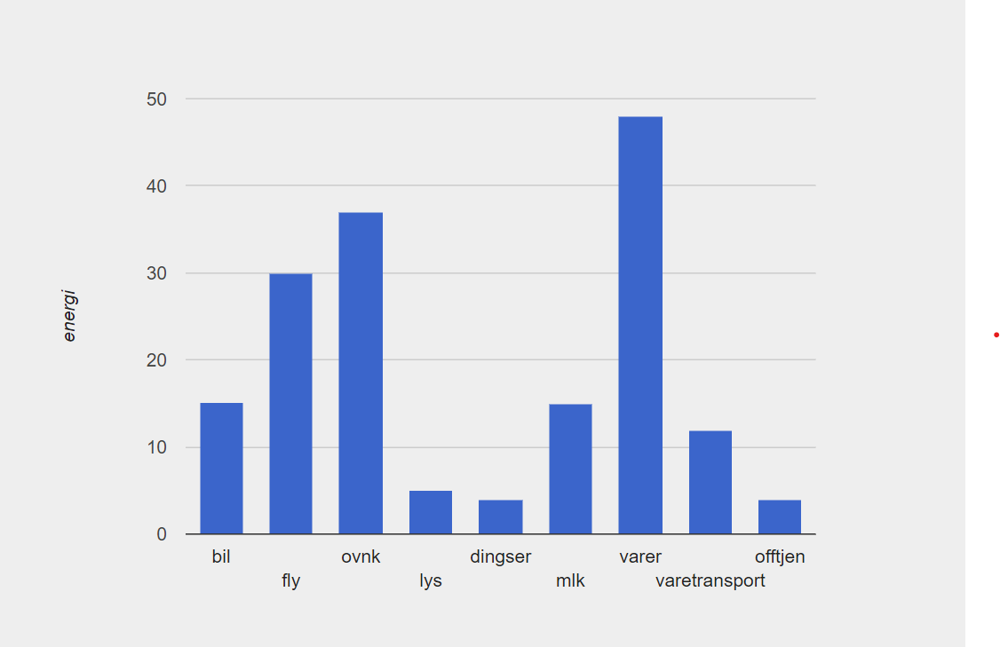

Navn:
Ørjan
Beskrivelse:
Ørjan's never gonna let you down,
Never gonna run around and desert you.
With a heart as vast as the Nordic skies,
He'll lift you up when the storms arise.
Never gonna say goodbye,
Never gonna tell a lie and hurt you.
Ørjan's laughter echoes like a song,
In his world, you'll always belong.
Interesser:
Mat, Gaming, Klatring, Friluft, Foto, Trening
Kreativ figur i Pyret

- Etter flytting til byen, blir det mest brukt kollektivtransport. Dermed vil bil være mindre i mitt tilfelle.
- Reiser svært sjeldent med fly. Denne blir derfor også mye lavere i mitt tilfelle
- Litt for glad i onlineshopping. Derfor vil både varer og varetransport være ganske høy for min del.